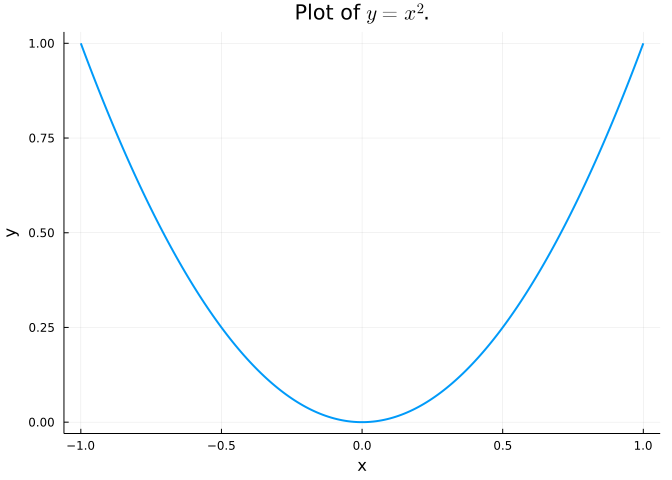

Code
print("Hello, World!")Hello, World!A demonstration of literate programming using Quarto and Julia. Knuth 1 says always be literate (Knuth 1984).
This document is set to render as an html document with options set for code-folding, a table of contents, and to allow copying of code when hovering over a code block.
Let’s begin with the basics.
print("Hello, World!")Hello, World!2 + 24Let’s plot \(f(x)=x^2\) over \([-1,1]\).

x = -1.0:0.01:1.0;
y = x.^2;
plot(x,y,legend=false,xlab="x",ylab="y",lw=2,,title=L"Plot of $y=x^2$.")Figure 1 shows the result.
Donald Knuth is a famous computer scientist.↩︎